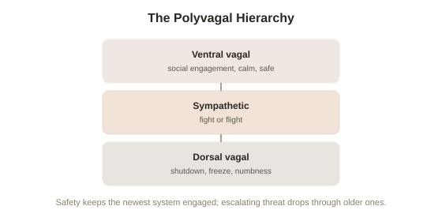

Chapter 2: Polyvagal Theory — Three Nervous System States, Not One Switch
Chapter 1 introduced the window of tolerance and its two failure modes, hyperarousal and hypoarousal, as a useful practical model. This chapter goes one level deeper into the actual biological mechanism behind it — a theory that gives hyperarousal and hypoarousal a precise physiological explanation, developed by neuroscientist Stephen Porges, and increasingly influential across trauma therapy.
Not one nervous system switch, but three states
The traditional picture of the autonomic nervous system is a simple two-way switch: sympathetic (activating, fight-or-flight) versus parasympathetic (calming, rest-and-digest). Porges's polyvagal theory, developed from the 1990s onward, argues this misses a crucial distinction hiding inside the parasympathetic side itself — specifically within the vagus nerve (the main nerve connecting the brainstem to the heart, lungs, and gut, carrying the bulk of parasympathetic signaling). Porges proposes the vagus nerve actually carries two functionally distinct branches, evolved at different points in vertebrate history, that produce two very different calm-adjacent states rather than one — meaning the nervous system doesn't have two settings, it has three, arranged in a specific evolutionary hierarchy.
The three states, in the order evolution built them
The oldest branch, the dorsal vagal system, is shared with reptiles and produces immobilization — a shutdown response (freezing, numbing, a drop in heart rate and energy) that predates more sophisticated threat responses and is essentially a last-resort survival strategy: playing dead when fighting or fleeing isn't viable. The sympathetic system, evolutionarily newer, produces the more familiar fight-or-flight activation — mobilized energy aimed at actively confronting or escaping a threat. The newest branch, unique to mammals, is the ventral vagal system, which Porges calls the social engagement system (the neural circuitry, unique to mammals, that coordinates facial expression, vocal tone, and a calm heart rate, enabling connection and co-regulation with other members of the same species) — this is the physiological state underlying calm, connected, socially engaged functioning, and it's also, on Porges's model, what actively keeps the older, more primitive dorsal and sympathetic responses in check under normal conditions.

Neuroception: assessing threat below conscious awareness
Porges's other central concept is neuroception (a proposed, largely unconscious process by which the nervous system continuously scans the environment and other people for cues of safety or danger, triggering a shift between the three states before conscious, deliberate evaluation occurs) — a subtle vocal tone, a facial expression, a posture can shift someone's physiological state before they've consciously registered anything as threatening at all. This offers a mechanistic account of something trauma survivors often report and struggle to explain to others: a seemingly minor, objectively harmless cue (a raised voice, a specific tone, a sudden movement) can trigger a full hyperarousal or shutdown response with no conscious decision involved, because the shift happened at the neuroceptive level, well before — and sometimes instead of — any deliberate assessment of actual danger.
Why this reframes hyperarousal and hypoarousal from Chapter 1
Polyvagal theory gives Chapter 1's window of tolerance a specific physiological identity: staying inside the window corresponds to the ventral vagal state — regulated, socially engaged, able to think clearly. Hyperarousal corresponds to a shift into the sympathetic state. Hypoarousal — the numbness, dissociation, and shutdown Chapter 1 described — corresponds to the older dorsal vagal state taking over, the nervous system's more primitive last-resort response. This reframes trauma treatment's actual target: rather than only working with thoughts or narratives, polyvagal-informed approaches focus heavily on cues that signal safety directly to the nervous system — vocal tone, rhythm, co-regulation with another calm, present person — aiming to help the nervous system spend more time able to access the ventral vagal state, since Porges's model holds that conscious reasoning has only limited direct access to which of the three states the body is currently running.
An honest note on where the science actually stands
It's worth flagging directly, in the same spirit as Chapter 1's caveat about van der Kolk: polyvagal theory is influential and clinically useful as an organizing framework, but several of its more specific physiological claims — particularly the detailed evolutionary sequencing and some of the proposed neural pathways — have faced real scientific critique and are not universally accepted among neuroscientists in the same way basic autonomic nervous system function is. The practical, clinically observed patterns it describes (states shifting rapidly, sometimes without conscious triggering; co-regulation helping restore calm) are well supported. The precise underlying biological story Porges offers to explain them is treated by many researchers as a genuinely useful working model, not settled neuroscience.
Try this
Ideas for noticing or testing this in your own life.
- Notice your own neuroception in a low-stakes moment: catch a small, sudden shift in how safe or on-edge you feel around another person, and see if you can trace it to a specific tone, expression, or posture — before any conscious "reason."
- Try co-regulation deliberately: next time you're mildly activated, spend two minutes with a calm, safe person or on a call with one, and notice whether your own state visibly settles just from their presence.
Worth pulling on?
A few loose threads from this chapter — if any of these genuinely grab you, that's a good sign of where to go next.
- If reasoning has limited direct access to the nervous system's state, that explains why the body-based therapies Chapter 1 mentioned target the state directly rather than working only through insight and conversation. → The subject of a later chapter: EMDR and somatic therapies, and what evidence actually says about how they work.
- Neuroception's below-conscious threat assessment is a specific, high-stakes case of automatic processing shaping behavior before deliberate reasoning engages. → Already in the library: Cognitive Biases & Judgment covers the same basic architecture — fast, automatic processing running ahead of conscious thought — in ordinary decision-making.